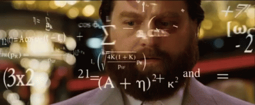

"une annotation explicative m'accompagne à droite"- 1
- Je m’affiche quand on passe la souris sur moi 🐭 !
Dans ce premier TP, nous allons rentrer tranquillement dans notre parcours de découverte de .
Cela se fera par les étapes suivantes:
RStudio, le logiciel qui nous permettra d’utiliser le langage ;Certains exemples de code présentent des annotations sur le côté, passez votre souris dessus pour les afficher, comme ci-dessous
"une annotation explicative m'accompagne à droite"RStudioHabituellement, pour pouvoir faire du , on utilise le logiciel RStudio1 qui offre un environnement un peu moins rudimentaire que l’interface graphique par défaut fournie lors de l’installation de .
Pour lancer un service RStudio sur des serveurs préconfigurés, nous allons utiliser une infrastructure nommée le SSPCloud qui est développée par l’équipe innovation de l’Insee pour des projets d’enseignement ou de data science.

Après avoir créé un compte sur datalab.sspcloud.fr/, cliquez sur ce bouton :
Après quelques instants de lancement du service sur les serveurs de l’Insee, vous pourrez accéder à votre RStudio prêt à l’emploi (démonstration en live ou aide mémoire)
RStudio
Ce premier exercice vise, après avoir observé la structure des fenêtres de RStudio, à prendre en main l’interface:
RStudio ;File/New File/R script et l’enregistrer sous le nom script1.R ;list.files ;script1.R le code qui permet de faire la liste des fichiers de votre dossier de travail ;RStudio CTRL + ENTREE pour exécuter ce code dans la console.Nous allons commencer par les objets en une dimension, c’est-à-dire les listes de valeurs de même type. Par exemple, ["ENS Ulm", "ENS Lyon", "ENS Paris-Saclay"] ou [4 8 15 16 23 42].
Ces listes de valeurs en une dimension peuvent être représentées par des vecteurs. Les quatre types les plus pratiques en sont :
Nous irons ensuite à des structures de données plus complexes mais qui sont en fait celles que nous manipulons plus couramment: les listes et les dataframes.
propose différents types d’objets numériques. Pour l’analyse de données, nous allons principalement nous intéresser principalement à deux types :
int pour integer)double pour nombres à virgule flottante)En pratique, les premiers sont un cas spécial des seconds. Contrairement à d’autres langages, ne tente pas de contraindre de manière automatique les nombres sans virgules à être des entiers (integers). C’est pratique mais sur de gros volumes de données ça peut poser problème car les double sont plus lourds que les int.
En général, on utilise la fonction class pour afficher le type d’un objet et si on veut être plus précis on peut utiliser typeof:
class(3)
typeof(3)
class(3.14)
typeof(3.14)Les fonctions as.numeric et as.integer peuvent être utilisées pour convertir d’un type à l’autre:
# Conversion en int
as.integer(3.79)[1] 3Attention à la conversion double \(\to\) int, qui tronque la partie décimale.
# double -> int -> double
as.numeric(
as.integer(3.79)
)[1] 3Les floats peuvent également être écrits en notation scientifique :
2e3[1] 2000class(2e3)[1] "numeric"
Comme tout langage informatique, est avant tout une calculette. On est sauvé, on peut donc faire des additions:
# Addition
8 + 9[1] 17est bien fait, il adapte le type des variables pour les mettre en cohérence lorsqu’elles peuvent l’être:
# Addition
8.1 + as.integer(9)[1] 17.1On a bien-sûr accès à d’autres opérations standards:
# Soustraction
5 - 2[1] 3# Multiplication
2 * 6[1] 12# Division
9 / 4[1] 2.25Il faut tout de même faire attention à la division par 0
# Division par 0
3 / 0[1] Inf-5 / 0[1] -InfCertains langages, comme Python, ne permettent pas la division par 0, ils renvoient une erreur plutôt qu’Inf. C’est un peu piégeux en R car cela peut arriver d’avoir des divisions par 0 sans qu’on s’en rende compte…
Comme toute calculette, on peut appliquer d’autres types d’opérations
# Division euclidienne : quotient
9 %/% 4[1] 2# Division euclidienne : reste
9 %% 4[1] 1# Puissance
2 ^ 5[1] 32# Racine carrée
sqrt(5)[1] 2.236068# Log
log(2)[1] 0.6931472# Exponentielle
exp(2)[1] 7.389056L’ordre des opérations suit la convention usuelle:
2 + 5 * (10 - 4)[1] 32Si on ne pouvait utiliser qu’en mode calculette peu raffinée, ça ne serait pas un langage très intéressant pour l’analyse de données. L’avantage principal de est qu’on va pouvoir manipuler des vecteurs, c’est à dire des suites de nombres. On va considérer que les vecteurs sont des suites de nombres ordonnés en une seule colonne:
\[ \begin{bmatrix} x_1 \\ x_2 \\ \vdots \\ x_n \end{bmatrix} \]
et on va appliquer des opérations sur chaque ligne de ces vecteurs. On parle de vectorisation des opérations pour désigner une opération qui s’appliquera de manière automatique à chaque élément de notre vecteur.
Par exemple, la multiplication est vectorielle par défaut:
5*c(1,20,2)[1] 5 100 10De même l’addition, à condition de mettre des vecteurs de taille cohérente:
c(1,20,2) + c(21,2,20)[1] 22 22 22c(1,20,2) - 3[1] -2 17 -1Si la taille des vecteurs n’est pas cohérente, recycle le vecteur le plus petit jusqu’à atteindre la bonne taille
c(1,20,2) - c(1,20)Warning in c(1, 20, 2) - c(1, 20): longer object length is not a multiple of
shorter object length[1] 0 0 1Les chaînes de caractères (ou strings) sont utilisées pour stocker de l’information textuelle. Plus précisément, elles peuvent stocker tout caractère de type Unicode, ce qui inclut les lettres des différentes langues, mais également la ponctuation, les chiffres, les smileys, etc.
Pour créer une chaine de caractères (string), on peut utiliser de manière indifférente les guillemets ou les apostrophes.
'mot'
"ça fonctionne aussi"'
"
[1] "mot"
[1] "ça fonctionne aussi"Attention au mélange des deux !
print('l'apostrophe, quelle catastrophe')Error: <text>:1:10: unexpected symbol
1: print('l'apostrophe
^La deuxième apostrophe est comprise comme la fin du string, et ne sait pas interpréter le reste de la séquence.
Il faut donc varier en cas de besoin :
"l'apostrophe, aucun problème"' est bien enchassée au sein des guillemets qui délimitent notre string.
[1] "l'apostrophe, aucun problème"Cela fonctionne également en sens inverse: les guillements sont bien interprétés lorsqu’ils sont entre apostrophes.
'les guillemets, "aucun problème"'[1] "les guillemets, \"aucun problème\""Comme l’illustre la sortie ci-dessus, il est possible de bien définir les caractères spéciaux de cette sorte en les échappant avec des antislashs \:
"les guillemets, \"aucun problème\""
'l\'apostrophe, aucun problème'\ permet à de comprendre que l’apostrophe ou le guillemet fait partie de la chaine de caractère et non de sa délimitation.
[1] "les guillemets, \"aucun problème\""
[1] "l'apostrophe, aucun problème" propose par défaut un certain nombre de fonctions utiles pour extraire ou transformer des vecteurs textuels. On en découvrira des plus pratiques et plus générales lorsqu’on se focalisera sur les données textuelles et le package stringr.
La fonction nchar permet de compter le nombre de caractères d’un string, tous caractères inclus (lettres, chiffres, espaces, ponctuation…).
nchar("J'ai 19 charactères")[1] 19Il ne faut pas la confondre avec la fonction length. Celle-ci nous donne la longueur du vecteur. Par exemple,
length("J'ai 19 charactères")[1] 1est de taille 1 puisqu’on a un seul élément dans notre vecteur. Si on prend un vecteur de plus grande dimension:
length(c("J'ai 19 charactères", "pas moi"))[1] 2On retrouve bien le nombre d’éléments de notre vecteur en sortie de length.
nchar est une opération vectorielle, on peut donc compter la longueur de chaque ligne de notre jeu de données:
nchar(c("J'ai 19 charactères", "pas moi"))[1] 19 7L’un des intérêts des fonctions de base de traitement des données textuelles est la possibilité de remettre en forme nos chaînes de caractères de manière automatique. Par exemple, l’opération la plus simple est de changer la capitalisation de notre texte:
toupper(c("sequence 850", "Sequence 850"))
tolower(c("SEQuEnce 850", "SEQUENCE 850"))[1] "SEQUENCE 850" "SEQUENCE 850"
[1] "sequence 850" "sequence 850"Mais on peut aussi nettoyer des chaines textuelles avec quelques fonctions de base :
strsplit(c("une séquence à séparer", "uneautreàséparer"), split = " ")[[1]]
[1] "une" "séquence" "" "" "" "à" "séparer"
[[2]]
[1] "uneautreàséparer"A ce stade, la sortie obtenue, avec des [[]] peut vous paraître étrange car nous n’avons pas encore découvert le type list.
Ce type de données n’étant pas forcément pratique pour l’analyse statistique, pour laquelle on préfère des formats comme le vecteur, ce sera beaucoup plus pratique d’utiliser le package stringr pour faire un split.
On peut tout à fait découper notre string sur autre chose que les espaces!
strsplit(c("une séquence à séparer", "uneautreàséparer"), split = "à")[[1]]
[1] "une séquence " " séparer"
[[2]]
[1] "uneautre" "séparer" On peut concaténer des chaines de caractère ensemble, c’est très pratique. Malheureusement le + ne fonctionne pas en R pour les chaines de caractères (contrairement à Python). Pour effectuer cela on utilise paste ou paste0 (une version moins générale mais qui est pensée pour les concaténations simples):
paste0(
"La première fois qu'Aurélien vit Bérénice,",
" ",
"il la trouva franchement laide. Elle lui déplut, enfin.",
" ",
"Il n'aima pas comment elle était habillée."
)
paste(
"La première fois qu'Aurélien vit Bérénice,",
"il la trouva franchement laide. Elle lui déplut, enfin.",
"Il n'aima pas comment elle était habillée.",
sep = " "
)paste0, on concatène en accolant les strings, sans espace.
paste, on peut choisir la manière d’accoler les strings, ici en mettant des espaces.
[1] "La première fois qu'Aurélien vit Bérénice, il la trouva franchement laide. Elle lui déplut, enfin. Il n'aima pas comment elle était habillée."
[1] "La première fois qu'Aurélien vit Bérénice, il la trouva franchement laide. Elle lui déplut, enfin. Il n'aima pas comment elle était habillée."On peut utiliser les strings comme templates. C’est particulièrement pratique pour automatiquement créer du texte à partir de valeurs issues de nos données. Pour cela on utilise sprintf:
sprintf("La première fois qu'%s vit %s", "Aurélien", "Bérénice")[1] "La première fois qu'Aurélien vit Bérénice"sprintf("%s et %s font %s", 2, 2, 2+2)[1] "2 et 2 font 4"%s sert à définir l’endroit où sera collé le texte voulu.
En , les vecteurs logiques sont utilisés pour stocker des valeurs booléennes, c’est-à-dire des valeurs vraies (TRUE) ou fausses (FALSE).
Les vecteurs logiques sont couramment utilisés pour effectuer des opérations de logique, des filtres de données et des sélections conditionnelles. Nous y reviendrons par la suite, nous les utiliserons fréquemment mais de manière indirecte.
5 > 3
2 == 2
0 == (2 - 2)
1 < 0TRUE, car 5 est supérieur à 3.
TRUE, car 2 est égal à 2.
TRUE, le chainage des opérations est respecté.
FALSE, car 1 n’est pas inférieur à 0.
[1] TRUE
[1] TRUE
[1] TRUE
[1] FALSEOn peut généraliser les comparaisons pour obtenir des vecteurs:
c(2, 4, 6, 8, 10, 1, 3) %% 2 == 0[1] TRUE TRUE TRUE TRUE TRUE FALSE FALSEOn obtient TRUE pour les nombres pairs, FALSE pour les impairs.
Utiliser des vecteurs logiques nous permettra, au quotidien, sélectionner des données. Par exemple si on a des données d’âge, on peut ne vouloir garder que les prénoms des adultes. Cela pourra être fait sur le modèle suivant:
c('Pierre', 'Paul', 'François', 'et les autres')[
c(25, 3, 61, 17) >= 18
][1] "Pierre" "François"Néanmoins nous verrons dans les prochains chapitres comment intégrer ce principe dans une séquence plus générale d’opérations grâce au package dplyr.
Les facteurs (factors) sont utilisés pour représenter des variables catégorielles, c’est-à-dire des variables qui prennent un nombre fini et prédéterminé de niveaux ou de catégories.
Pour convertir un vecteur numérique ou textuel en vecteur, on utilise la fonction factor:
factor(
c("capitale","préfecture","sous-préfecture","préfecture")
)[1] capitale préfecture sous-préfecture préfecture
Levels: capitale préfecture sous-préfecturefactor(c(1,10,3))[1] 1 10 3
Levels: 1 3 10Les niveaux d’un facteur sont les différentes catégories ou valeurs possibles que la variable peut prendre. On peut les lister avec la fonction levels
[1] "capitale" "préfecture" "sous-préfecture"On peut aussi ordonner ces niveaux si cela a un sens lors de la définition du facteur. Cela implique néanmoins de connaître, a priori nos différents niveaux et les renseigner à dans l’ordre:
[1] capitale préfecture sous-préfecture préfecture
Levels: capitale < préfecture < sous-préfectureJusqu’ici, nous avons dû définir à chaque fois notre objet avant de pouvoir lui appliquer une transformation. Comment faire si l’on veut réutiliser un objet et lui appliquer plusieurs transformations ? Ou faire des opérations à partir de différents objets ?
Pour cela, on va assigner les objets à des variables. Cela permet ensuite de réaliser des opérations à partir de ces variables.
En , l’assignation se fait suivant le format :
nom_de_la_variable <- objetLe sens de la flèche a une importance et il est conventionnel de mettre à gauche le nom de la variable (et donc d’utiliser nom_de_la_variable <- objet plutôt que objet -> nom_de_la_variable).
L’assignation sous la forme <- est une spécificité de par rapport à beaucoup de langages. Dans la plupart des langages informatiques, comme en Python par exemple, l’assignation se fait avec =:
nom_de_la_variable = objetC’est également possible en mais il est plus conventionnel d’utiliser <-.
Voici par exemple comment créer un vecteur x :
x <- 5
x[1] 5Celui-ci peut alors être réutilisé ultérieurement dans le code:
class(x)[1] "numeric"Les variables peuvent être n’importe quel type d’objet et on peut créer une variable à partir d’une autre:
x <- c(5, 10)
y <- x + 2*x
y[1] 15 30Contrairement à d’autres langages de programmation, est dit dynamiquement typé : il est possible de réassigner une variable à un objet de type différent. Cela facilite la lecture et le développement, mais peut parfois générer des problèmes difficiles à débugger…
Il faut donc toujours bien faire attention que le type de la variable est bien celui que l’on s’imagine manipuler.
x <- 3
x <- "blabla"
class(x)x n’est plus un numeric mais un character. Gare aux opérations à venir sur x !
[1] "character"Il y a naturellement certaines contraintes sur les opérations selon les types des objets.
x <- "test"
y <- 3
x + y+ n’existe pas pour les strings comme on l’a vu précédemment
Error in x + y: non-numeric argument to binary operatorIl est par contre possible d’harmoniser les types en amont :
x <- "5"
y <- 3
z <- as.numeric(x)
y + z[1] 8En , les indices de position dans les vecteurs permettent d’accéder à des éléments spécifiques en utilisant leur position dans le vecteur. Les indices commencent à 1, ce qui signifie que le premier élément a un indice de 1, le deuxième a un indice de 2, et ainsi de suite2.
x <- 2*seq(1,10)Pour accéder à un élément spécifique du vecteur en utilisant son indice de position, on utilise la notation [ ]. Par exemple, pour obtenir le deuxième élément de x, vous pouvez faire ceci :
# Accéder au deuxième élément du vecteur
deuxieme_position <- x[2]
deuxieme_position[1] 4Maintenant, la variable deuxieme_position contient la valeur 4.
On peut d’ailleurs mettre à jour le vecteur x, cela ne changera pas la valeur de la variable deuxieme_position :
x <- seq(5,9)
print(deuxieme_position)[1] 4deuxieme_position == x[2][1] FALSEEn , une valeur de variable n’est changée que s’il y a, d’une manière ou d’une autre, réassignation.
On peut aussi utiliser une séquence de valeurs pour récupérer un sous-ensemble de notre vecteur (on appelle cette opération slice)
x <- seq(5,15)
x[1:5][1] 5 6 7 8 9x[c(2,3,8)][1] 6 7 12Il est également possible de faire des sélections négatives, c’est-à-dire toutes les valeurs sauf certaines. Pour cela, on utilise les indices négatifs
x[-3]
x[c(-3, -1)] [1] 5 6 8 9 10 11 12 13 14 15
[1] 6 8 9 10 11 12 13 14 15Cependant, ce n’est pas une bonne pratique d’utiliser de manière brute les nombres. En effet, imaginons que vous transformiez dans une longue chaine d’opérations votre vecteur: vous ne savez plus forcément quelles positions stockent quelles valeurs (et sur les vrais jeux de données vous ne savez même pas exactement quelles lignes de votre jeu de données stockent quelles valeurs).
C’est pour cette raison qu’on privilégie les sélections à partir de conditions logiques. On l’avait vu précédemment sous cette forme :
c('Pierre', 'Paul', 'François', 'et les autres')[
c(25, 3, 61, 17) >= 18
][1] "Pierre" "François"Maintenant que nous connaissons l’assignation de variables intermédiaires, la syntaxe se simplifie, ce qui rend le code plus lisible.
prenom <- c('Pierre', 'Paul', 'François', 'et les autres')
age <- c(25, 3, 61, 17)
prenom[age >= 18][1] "Pierre" "François"Un autre exemple pour illustrer avec des données textuelles:
villes <- c("Paris", "Toulouse", "Narbonne", "Foix")
statut <- c("capitale","préfecture","sous-préfecture","préfecture")
villes[statut == "préfecture"][1] "Toulouse" "Foix" Nous découvrirons lors du prochain chapitre une généralisation de cette approche avec les filtres de données.
Les vrais jeux de données ne sont pas toujours complets. Ils le sont même rarement. Par exemple, dans des séries longues de PIB, les valeurs rétrospectives peuvent manquer pour des pays qui n’existaient pas avant une certaine date.
Les valeurs manquantes, souvent représentées par NA (Not Available) en , sont un aspect essentiel de la gestion des données et l’une des forces de est de proposer une gestion cohérente de celles-ci. Par exemple, si on désire faire la moyenne mondiale des PIB sur une année passée: faut-il exclure ou non les pays pour lesquels on a pas d’information cette année-là ou renvoyer une erreur ? La gestion appropriée des valeurs manquantes est donc cruciale lors de l’analyse de données et de la création de modèles statistiques.
La fonction is.na() permet de vérifier si une valeur est manquante dans un vecteur:
donnees <- c(10, NA, 30, NA, 50)
is.na(donnees)TRUE pour les valeurs manquantes, FALSE sinon.
[1] FALSE TRUE FALSE TRUE FALSELa gestion appropriée des valeurs manquantes est cruciale pour éviter des biais dans les analyses statistiques et pour obtenir des résultats fiables car les valeurs manquantes sont rarement un hasard: il existe souvent une raison pour lesquelles une valeur est manquante et l’hypothèse de missing at random est souvent fausse.
Il existe plusieurs approches pour traiter les valeurs manquantes en fonction de l’objectif d’une analyse. Cela dépasse le cadre de ce cours mais voici, dans les grandes lignes, les trois stratégies les plus courantes sont :
na.omit() ou complete.cases(). C’est par exemple ce que fait la régression linéaire par défaut dans R. Cependant, cette approche peut entraîner une perte d’informations ou l’introduction de biais, elle n’est donc pas à faire à la légère ;Première série d’exercices sur les objets uni-dimensionnels permettant d’approfondir les notions vues précédemment.
Afficher le type de x lorsque :
x <- 3
x <- "test"
x <- 3.5Calculer la somme des longueurs de chacune des chaînes de caractères suivantes :
Quel est le type adapté pour définir un code commune (ne pas chercher à importer le jeu de données3) ?
02350.
Voici une liste de codes communes issus du Code Officiel Géographique (COG)
liste_communes <- c(
'01363', '02644', '03137', '11311', '12269', '13018', '14458', '15008',
'23103', '2A119', '2B352', '34005', '2B015', '2A015',
'38188', '39574', '40223', '41223', '42064',
'63117', '64218', '65209', '66036', '67515', '68266',
'77440', '78372', '79339', '80810', '81295', '82067',
'93039', '94054', '95061', '97119', '97219', '97356', '97421', '97611'
)Supprimer les espaces superflus au début et à la fin de la chaîne suivante :
a <- " Un string très mal formatté. "[1] "Un string très mal formatté."?trimws() dans la console pour afficher l’aide de la fonction trimws()
Les fonctions de base de manipulation de données textuelles étant parfois un peu difficiles d’usage avec , on pourra aller beaucoup plus loin lorsqu’on découvrira le package stringr.
Les matrices peuvent être vues comme le prolongement en deux dimensions des vecteurs. Au lieu d’avoir des données sur une seule dimension, on empile des colonnes côte à côte.
\[ X = \begin{bmatrix} x_{11} & x_{12} \\ x_{21} & x_{22} \\ \end{bmatrix} \]
Néanmoins, les matrices présentent une limite fondamentale: on ne peut stocker dans une matrice que des éléments de même type. Autrement dit, on aura exclusivement des matrices numériques, des matrices de caractères ou des matrices logiques. Il est impossible de construire une matrice dont certaines variables sont de type numérique (par exemple l’âge des personnes enquêtées) et d’autres de type caractère (par exemple leur secteur d’activité).
Les matrices ne constituent donc pas un type d’objet susceptible de stocker l’information statistique habituellement mobilisée dans les enquêtes sociales. Le mix des types n’est pas pratique, c’est pour cette raison que les praticiens de l’analyse de données les utilisent peu4.
On propose donc un exercice sur les matrices mais on va rapidement passer à des types plus flexibles, plus utiles pour l’analyse de données où les variables sont de type diverses.
Soit une matrice:
X <- matrix(letters[1:20], nrow = 4, ncol = 5)Sélectionner l’élement le plus à gauche de notre matrice (première ligne, première colonne)
Sélectionner l’ensemble de la première ligne
Sélectionner l’ensemble de la première colonne
Sélectionner les éléments à l’intersection :
X[*]. Avec les matrices le principe est le même mais on ajoute une dimension X[*,*]
Les listes constituent un type d’objet beaucoup plus riche qui permet précisément de rassembler des types d’objets très différents : une liste peut contenir tous les types d’objet (vecteurs numériques, caractères, logiques, matrices, etc.), y compris d’autres listes.
Cette très grande souplesse fait de la liste l’objet de prédilection pour stocker une information complexe et structurée, en particulier les résultats de procédures statistiques complexes (régression, classification, etc.). Pour des données plus structurées, comme le sont les jeux de données, nous allons voir ensuite que nous allons utiliser un type spécial de liste: le dataframe.
R par Dall-E-2Voici une liste illustrant le principe de stockage de données hétérogènes dans un même objet:
[[]] pour accéder au 2e élément de notre liste pour au 2e nombre au sein du dernier élément de notre matricecommunes dans votre liste stockant les données suivantes c('01363', '02644', '03137', '11311')departements en extrayant les deux premiers chiffres de votre élément communesLorsqu’on utilise des listes, on peut effectuer des opérations sur chaque élément de notre liste. On appelle cela boucler sur notre liste.
Dans cet exercice, nous allons découvrir comment appliquer la même fonction aux éléments de notre liste grâce à lapply.
typeof de l’élément est “double” et 0 sinon?lapply ne vous aide pas
Exemple d’utilisation de lapply pour faire la somme dans chaque élément de notre liste
ma_liste_nombres <- list(c(1,2), seq(1,10))
lapply(ma_liste_nombres, sum)[[1]]
[1] 3
[[2]]
[1] 55C’est l’objet central de l’analyse de données avec . Ces objets permettent en effet de représenter sous la forme d’une table (i.e. d’un objet à deux dimensions) des données de nature tant quantitatives (variables numériques) que qualitatives (variables de type caractère ou facteur).

Voici par exemple un dataframe:
# Création du data.frame df
df <- data.frame(
var1 = 1:10,
var2 = letters[1:10],
var3 = rep(c(TRUE, FALSE), times = 5)
)Sa structure interne peut être vérifiée avec la fonction str:
str(df)'data.frame': 10 obs. of 3 variables:
$ var1: int 1 2 3 4 5 6 7 8 9 10
$ var2: chr "a" "b" "c" "d" ...
$ var3: logi TRUE FALSE TRUE FALSE TRUE FALSE ...Quand on travaille avec R, l’une des fonctions qu’on utilise le plus est head. Elle permet d’afficher les \(n\) premières lignes de notre jeu de données:
var1 var2 var3
1 1 a TRUE
2 2 b FALSE
3 3 c TRUE
4 4 d FALSE
5 5 e TRUE
6 6 f FALSEIl est également possible d’utiliser le viewer de RStudio pour afficher des jeux de données.
Attention cependant, ce viewer peut rencontrer des problèmes de performance et faire planter votre session R quand le jeu de données commence à être d’une taille conséquente.
Je recommande plutôt de toucher utiliser head ou de sélectionner des lignes aléatoirement avec sample:
var1 var2 var3
2 2 b FALSE
1 1 a TRUE
10 10 j FALSEDu point de vue de sa structure, un data.frame est en réalité une liste dont tous les éléments ont la même longueur : c’est ce qui permet de le représenter sous la forme d’un tableau à deux dimensions.
is.list(df)[1] TRUElapply(df, length)$var1
[1] 10
$var2
[1] 10
$var3
[1] 10De ce fait, les data.frame empruntent leurs caractéristiques tantôt aux listes, tantôt aux matrices comme le montre l’exercice suivant:
dfdfdf. Est-ce le comportement d’une matrice ou d’une liste ?df. Est-ce le comportement d’indexation d’une matrice ou d’une liste ?var1 et var2.L’intérêt d’utiliser un data.frame est qu’on peut facilement mettre à jour nos données lors d’une analyse statistique. Les opérations les plus classiques, sur lesquelles nous reviendrons lors du prochain chapitre, sont
Il existe plusieurs manières de faire référence à une colonne déjà existante d’un dataframe. La plus simple est d’utiliser la structure dataframe$colonne. Cela nous donnera un vecteur et on retombe sur ce format qu’on connaît déjà:
class(df$var1)[1] "integer"var4 de notre jeu de données égale au carré de var1var5 de notre jeu de données concaténant les deux premières variables en généralisant le schéma 1=a.df_small1 pour les lignes où la condition logique var3 est vérifiéedf_small2 pour les lignes où var1 est paire (voir plus haut l’exemple sur la division euclidienne pour le modèle)Le prochain chapitre va nous permettre d’aller beaucoup plus loin grâce à l’écosystème du tidyverse et notamment son package phare dplyr. Sans cet ensemble de packages facilitant grandement l’analyse statistique, ne serait pas devenu l’un des deux langages phares de la statistique.
Pour installer soi-même RStudio, les instructions sont ici. Néanmoins, dans le cadre de ce cours, vous n’aurez pas besoin de faire l’installation, nous allons utiliser une infrastructure préconfigurée. De cette manière, nous aurons accès au même environnement.↩︎
Cette remarque peut paraître triviale mais, en informatique, elle ne l’est pas. Beaucoup de langages (Python, C) ont une indexation qui commence à 0, comme c’est la convention en algèbre. Cela signifie que le premier élément a un indice 0, le deuxième indice 1 et le dernier un indice \(n-1\).↩︎
La suite du cours sera l’occasion d’amplement utiliser ce jeu de données.↩︎
L’objet matrice sera surtout utilisé par les les chercheurs en statistique mathématique ou les spécialistes d’algorithmique qui manipuleront des objets numériques bas niveau.↩︎